The purpose of this post was to summarize teacher feedback about the utility and interpretability of the CORE data compared to Traditional ORF scores to help collect consequential evidence of validity for CORE.
The purpose of this survey was to solicit teacher feedback about the utility and interpretability of the CORE data compared to Traditional ORF scores to help collect consequential evidence of validity for CORE.
We conducted an online survey in summer of 2020 with institutional IRB approval with nine teachers, three in each of Grades 2 to 4, who participated in our 2018-19 study.
We provided participating teachers with reports and graphs for individual students using de-identified, longitudinal student results from the 2018-19 study to compare the differentiation of teachers’ decisions about instruction between Traditional ORF (easyCBM) results and CORE results.
Nearly all teachers reported the student sample as reading “below grade level”, but many teachers wanted more information (besides ORF scores) before labeling a student “at risk”.
In general, most teachers agreed that the CORE data was more trustworthy based on its trajectory, and was better for progress monitoring as it displayed steady growth, but several teachers noted that both CORE and Traditional ORF showed consistent trends. Although the teachers reported it was difficult to interpret whether an intervention was working based on the available data, many teachers noted that it was easier to differentiate that the intervention was or was not working based on the CORE data. It was commonly difficult for teachers to determine if the intervention was effective based on the Traditional ORF data.
Teachers unanimously agreed that having measurement error displayed on the graphs was helpful when making data-based decisions. Many teachers agreed that the CORE data was better for progress monitoring and data-based decisions because it appeared to have a smaller measurement error and more consistent trend than the Traditional ORF data. Some teachers reported increased usability of the CORE data as it gave them more reliable and accurate data. Common applications of the measurement error included early identification, understanding the range of a student’s score, and as a guide to evaluate whether their interventions were effective or not.
All teachers who participate in the 2018-19 study were invited to participate in the study. The first three teachers per grade that responded to the invitation to participate were selected to participate.
Of the 1,008 student from the 2018-19 study, only 430 students had complete ORF data across the four measurement occasions for both measures, CORE and Traditional ORF. For each grade, we randomly sampled four students that scored at/above the 10th percentile and at/ below the 25th percentile.
For each student, we created two figures. The first figure showed the CORE and Traditional ORF scores across the four measurement occasions. The second figure showed the same data but included a shaded region representing the standard error of measurement (SEM) at each measurement occasion. The Traditional ORF SEM was a classical SEM taken from the easyCBM technical documentation, and the CORE SEM was a conditional SEM. A more thorough description can be found here.
For each student, teachers responded to the following items.
Teachers were provided with the student’s fall easyCBM oral reading fluency score in words correct per minute (WCPM) and were asked to:
The teacher then needed to refer to the figure without the SEM to answer the following questions.
Which line might be better for progress monitoring?
Based on the trajectory of the lines - that is, the shape of the lines - which line might be more trustworthy?
Let’s say the figure shows data of a student receiving a reading intervention. For both the the YELLOW and BLACK lines separately: Look at the first three data points only (ignore the last data point from May or June). What might you say about the intervention? Why?
Teachers were told:
The figure below shows the same data you have just seen, but in a different way. Now, the lines are in separate graphs, and each is surrounded by gray shading. The shaded area represents the area that we think contains the students true score. This is sometimes called the measurement error.
The less measurement error, the better, because that means the score is more accurate. That is, the score better reflects the students “true ORF ability.” So the smaller the gray shaded area, the better. How familiar are you with this concept?
When you and your peers discuss student data (for example, in school teams), do you discuss measurement error, or whether the data is accurate, or whether the data reflects what the student can do?
Which line might be better for progress monitoring and data-based decisions? Why?
Does the shaded area in the graphs give you useful information if you were using the graphs to make data-based decisions?
How might you use this figure to make a data-based decision?
Teachers in Grades 3 and 4 were also given the students’ year-end Smarter Balanced ELA (reading) performance level and were asked the following questions.
Which line might better correspond with the SBAC performance level?
Based on the last data point from May or June ONLY, which point might better match what you expect from a student at this performance level?
Based on the first data point from Oct or Nov ONLY, which point might better match what you expect from a student at this performance level?
The below figures are representative of 2nd grade student scores. Please refer back to these figures when observing the data collected from teacher surveys.
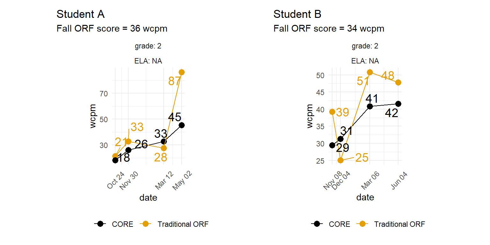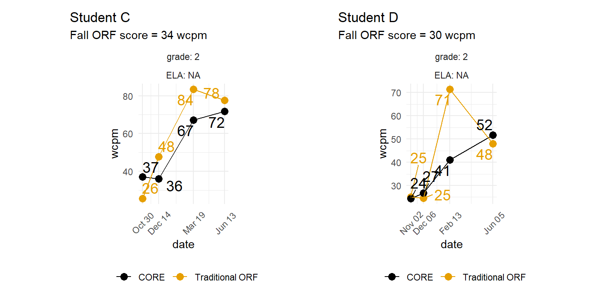
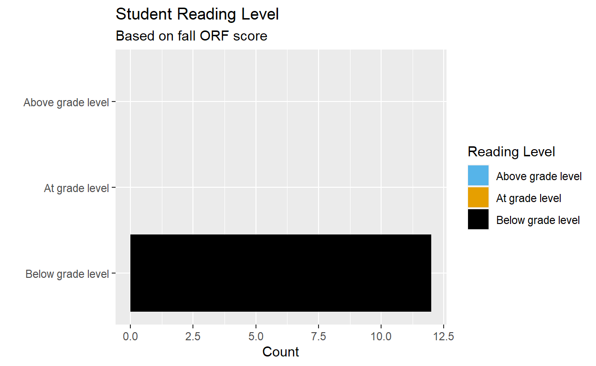
| Teacher | ORF | Response |
|---|---|---|
| Student A | ||
| Teacher 1 | 36 | This student is below grade level. We want students coming in to second grade in the fall at around 63 cwpm to be at the 50th %ile or above. This students falls under the 25th percentile. |
| Teacher 2 | 36 | Based on this score alone I would said this student is reading below grade level, HOWEVER I occasionally have a student who reads slowly (below grade level in ORF) yet has great comprehension and does not fit into any of our reading intervention programs. It is also fairly typical for kids to come into fall a little low after having the summer off. |
| Teacher 3 | 36 | In my class, I would have not placed this student in an intervention group for this score alone. Nevertheless, this is also a score that would have caused me to take note of this student. |
| Student B | ||
| Teacher 1 | 34 | This students is below grade level and coming into second grade below the 25th percentile. |
| Teacher 2 | 34 | This student's score is below the fall target for second graders. Although it is possible that this student is coming out of summer and will pop back up, this student will likely need/benefit from interventions. |
| Teacher 3 | 34 | I would want to say they were below grade level, but I wouldn't have enough information to know what support to give them. |
| Student C | ||
| Teacher 1 | 34 | This student is coming in below the 25th percentile in the fall of 2nd grade. |
| Teacher 2 | 34 | This student is reading below the fall benchmark target and will likely need/benefit from interventions. |
| Teacher 3 | 34 | The student is probably below grade level, but I don't know what services to offer the student based on that score alone. |
| Student D | ||
| Teacher 1 | 30 | This student is far below grade level coming into second grade. |
| Teacher 2 | 30 | This student is pretty significantly below the fall target for second grade. He/she would be placed into an intervention. |
| Teacher 3 | 30 | Student seems to be below grade level, however I do not have enough data to make an informed decision about supports for the student. |
Results: Based on all of the second grade ORF scores, all three teachers unanimously agreed that these students fell below the 2nd grade reading level and would be considered at risk.
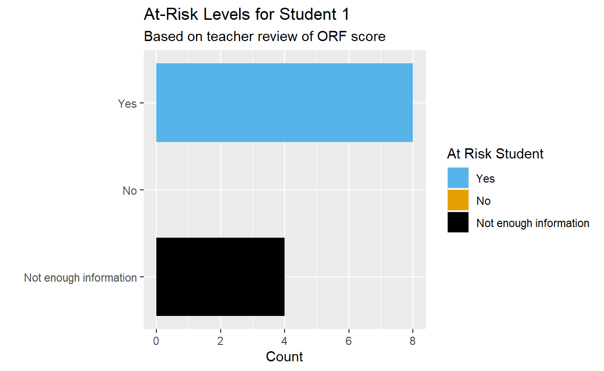
| Teacher | Student | Response |
|---|---|---|
| Teacher 3 | Student A | Reading Fluency |
| Teacher 3 | Student B | Reading Fluency, Oral samples |
| Teacher 3 | Student C | Reading Fluency, Oral Samples |
| Teacher 3 | Student D | Reading Fluency, Oral Sample |
Results: Many teachers believe these students are at risk of poor reading outcomes. When asked to further explain, many teachers felt they didn’t have enough information. To make a conclusive decision about the student, teachers asked to see an oral sample and data on reading fluency.
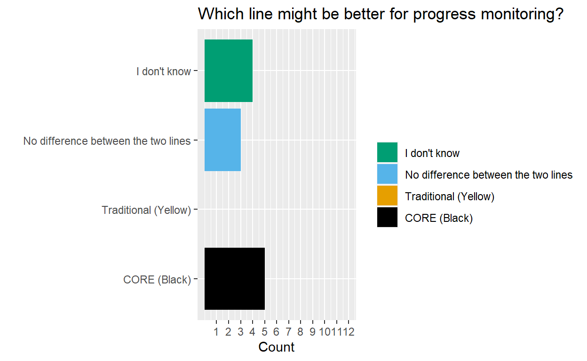
| CORE (Black) | ||
|---|---|---|
| Teacher | Student | |
| Teacher 2 | Student A | It has a more steady and realistic incline. The yellow line does a lot of bouncing around. I don't typicall trust a huge outlying score (like the 87) until I have seen several more scores like it. |
| Teacher 2 | Student B | It shows steady growth without outlying data points. However, if you're asking which "looks" better, I suppose yellow, because it is ultimately higher. |
| Teacher 2 | Student D | The growth is more steady and reliable and the final data point is higher than the yellow. |
| Teacher 3 | Student B | They show progress coming back from summer and then level off at the end of the school year. This seems typical of many students. |
| Teacher 3 | Student D | The data seems more indicative of student progress. |
| No difference between the two lines | ||
|---|---|---|
| Teacher | Student | |
| Teacher 2 | Student C | Both lines show a pretty rapid rate of growth with one outlier date point. |
| Teacher 3 | Student A | They both show me WCPM, I have seen both types of progress in my students. |
| Teacher 3 | Student C | They both show typical student data. |
| I don't know | ||
|---|---|---|
| Teacher | Student | |
| Teacher 1 | Student A | I don't understand what you mean by "better for progress monitoring." Are you asking which student would better qualify for progress monitoring? Or which line looks like more accurate progress monitoring? I would definitely consider the May score on the yellow line to be an outlier and would reassess this student on 3 different passages. |
| Teacher 1 | Student B | Again, not understanding what this question is asking. The yellow line is what we typically see as students go up and down based on passages. |
| Teacher 1 | Student C | I don't understand what the question is asking. |
| Teacher 1 | Student D | NA |
Results: For most of the plots, teachers agreed that the black (CORE) line was better for progress monitoring. Common aspects pointed out included steady and realistic inclines displayed as well as the data being indicative of progress.
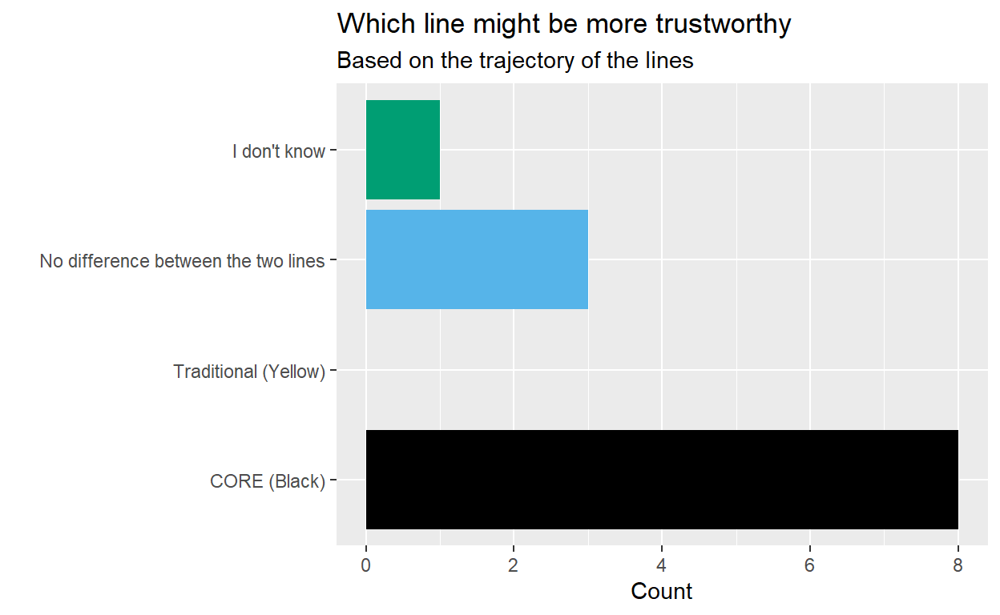
| Why? | ||
|---|---|---|
| CORE (Black) | ||
| Student A | Teacher 1 | It looks like more typical growth because of the last data point on the yellow line. Although, it is also very normal to see students go up and down depending on the passage. |
| Student A | Teacher 2 | The black line shows steady growth, wich is probably more realistic of improvement. |
| Student A | Teacher 3 | Typically students show a steady progress rather that a sudden increase (shown in yellow). |
| Student B | Teacher 2 | The growth is more steady. |
| Student B | Teacher 3 | This trajectory is common for the majority of my students. |
| Student D | Teacher 1 | It shows more typical growth without the large spike that the yellow line has. |
| Student D | Teacher 2 | It has no outlying data points like the yellow line does. |
| Student D | Teacher 3 | The data is consistent. |
| I don't know | ||
| Student B | Teacher 1 | Either of these lines could represent a typical student. Ideally, they'd all show growth like the black line, but that's not reality. |
| No difference between the two lines | ||
| Student C | Teacher 1 | They follow a similar pattern. |
| Student C | Teacher 2 | Both lines show a pretty rapid rate of growth with one outlier date point. |
| Student C | Teacher 3 | I am used to seeing data represented in both student samples. |
Results: Many teachers agreed that the black (CORE) line is more trustworthy based on its trajectory. Some noted the steady growth that the line follows which is indicative of progress.
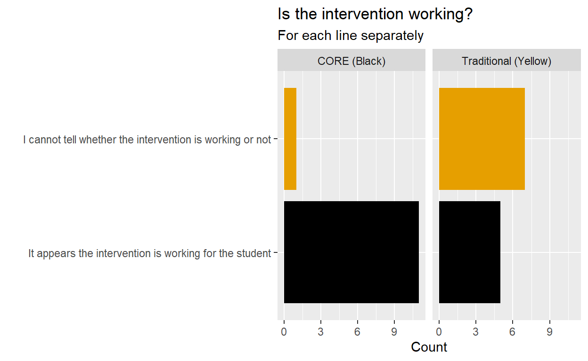
| Teacher | ||
|---|---|---|
| I cannot tell whether the intervention is working or not | ||
| Student A | Teacher 1 | For a student this low, they would probably need to be progress monitored at a first grade level. We'd want to see bi-weekly data points to see if they're making progress at their instructional level. Progress on a second grade level passage may not be visible even though an intervention is working because the second grade passage is still too difficult. |
| Student A | Teacher 2 | The student seems to be progressing in an upward trend. BUT, since the student is bouncing up and down, I would need to see more data points showing growth. Otherwise, moving from 21 to 28 WPM is not adequate growth. |
| Student A | Teacher 3 | The data points are close together and there is some reading regression from time to time. |
| Student B | Teacher 2 | While the third data point looks really good, it is not super trustworthy on its own after the prior data point that was so low. I would need to see more data points showing a continuation of the upward trend before I would trust the growth. |
| Student B | Teacher 3 | The data points are all over. |
| Student D | Teacher 1 | That last data point being so much higher than the first two makes me think there was an error. I would want more data to tell whether the intervention was working or not. |
| Student D | Teacher 2 | This student appears to be showing miraculous growth, however, I wouldn't trust this data without additional data points supporting/proving the steady growth. |
| It appears the intervention is working for the student | ||
| Student B | Teacher 1 | They ended higher than they were. Again, I'd like to see a lot more data points between Nov-Mar to make this decision. |
| Student C | Teacher 1 | They are showing a lot of growth in ORF from Oct-Mar. |
| Student C | Teacher 2 | This student appears to be making great growth. All date points are showing growth. BUT, I would still love to see more data points to see this student maintaining the growth, as well as accuracy. |
| Student C | Teacher 3 | There is a steady increase in student achievement. |
| Student D | Teacher 3 | There is a large increase in student ability at the third point. |
| Teacher | ||
|---|---|---|
| I cannot tell whether the intervention is working or not | ||
| Student C | Teacher 1 | If I'm ignoring the last data point, I'd want to see at least one other data point near the 67 cwpm mark from March before deciding whether the intervention was working. |
| It appears the intervention is working for the student | ||
| Student A | Teacher 1 | They increased from 18 to 33, so I assume it's working, but again I'd want to see more information and data points at their instructional level before making this assumption. |
| Student A | Teacher 2 | The black line shows steady growth in an upward trend with bouncing up and down. Although this nowhere near the amount of growth I would like to see from this student in this amount of time, this tells me the student is steadily progressing/showing growth. I would hope to see more date points in that amount of time (we progress monitor student receiving interventions every two weeks). I would also like to see student accuracy. For a student who started out reading so low, it would be important to me that their accuracy is improving, even if their fluency isn't making huge gains. |
| Student A | Teacher 3 | There is a steady increase in WCPM, |
| Student B | Teacher 1 | It shows a steady increase in their ORF. |
| Student B | Teacher 2 | This student appears to be making steady growth with no outlying data points. |
| Student B | Teacher 3 | There is a constant growth demonstrated throughout the year. |
| Student C | Teacher 2 | This student appears to be making great growth, although the number of data points is limited! |
| Student C | Teacher 3 | There is very little regression and then student achievement is demonstrated. |
| Student D | Teacher 1 | It shows realistic growth. |
| Student D | Teacher 2 | This student appears to be making steady, realistic growth with now crazy outlying data points. |
| Student D | Teacher 3 | There is a steady performance increase throughout the three data points. |
Results: Most teachers noted that is was easier to differentiate that the intervention was working based on the black (CORE) line. It was commonly difficult to determine if the intervention was working when only observing the yellow line.
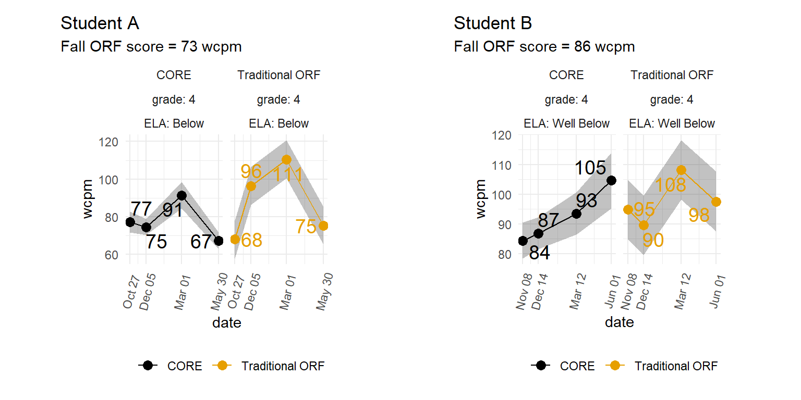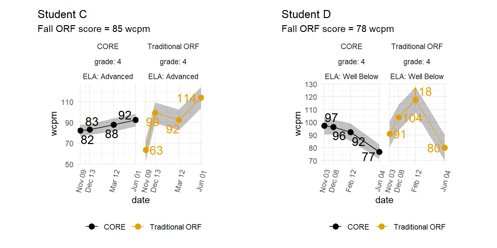
| CORE (Black) | ||
| Student A | Teacher 1 | NA |
| Student B | Teacher 1 | It shows less margin of error. |
| Student C | Teacher 1 | Less margin of error. |
| Student D | Teacher 1 | Less room for measurement error. |
| Student A | Teacher 2 | It has a lower margin or error and is likely shows a truer picture of the student's actual progress. |
| Student B | Teacher 2 | It has a smaller margin of error. It shows a more steady growth pattern. |
| Student C | Teacher 2 | According to the line, it has a smaller margin of error. |
| Student D | Teacher 2 | It has a much smaller margin of error. |
| Student A | Teacher 3 | There appears to be little to no measurement error. |
| Student B | Teacher 3 | There is little measurement error, it seems more trustworthy. |
| Student C | Teacher 3 | The shaded area is small, this suggests there is little measurement error. |
| Student D | Teacher 3 | The grey area indicates little measurement error. |
Results: Teachers unanimously agreed that the black (CORE) line was better for progress-monitoring and data-based decisions. Many pointed out that the margin of error was small to none compared to the yellow line.
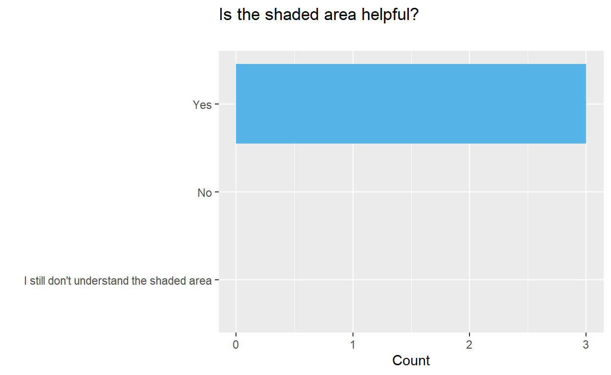
| Response | |
|---|---|
| Student A | |
| Teacher 1 | You might be able to trust the last number on the yellow line a little more if you assume that the margin of error shows they could actually have been quite a bit higher in November. |
| Teacher 2 | Recognizing the measurement error could help me decide whether to keep each student in his/her current intervention or change to a new intervention. At some point, it could also help me to decide whether to move a student out of interventions altogether. |
| Teacher 3 | If I received information that looked like the yellow line, I might attempt to figure out why the student is only achieving what the data shows. Maybe they are distracted or confused about testing process. |
| Student B | |
| Teacher 1 | The yellow line shows a lot more room for measurement error, so you'd have to take those scores with a grain of salt. |
| Teacher 2 | With the shaded area, I can see that the student represented by the black line is making steady growth and the data points are likely more trustworthy. |
| Teacher 3 | For the yellow line, it suggests that there is high error in the measurement. |
| Student C | |
| Teacher 1 | NA |
| Teacher 2 | According to the shaded area, the student in yellow might need to continue to demonstrate growth with additional data points, while the student in black is successfully demonstrating similar growth. |
| Teacher 3 | I would think the black line shows accurate data for the student where the yellow line shows some measurement error. |
Results: Teachers unanimously agreed that the shaded area present on the graphs was helpful when making data-based decisions. Teachers noted increased usability as the black (CORE) line gives them more reliable and accurate data.
The below figures are representative of 3rd grade student scores. Please refer back to these figures when observing the data collected from teacher surveys.
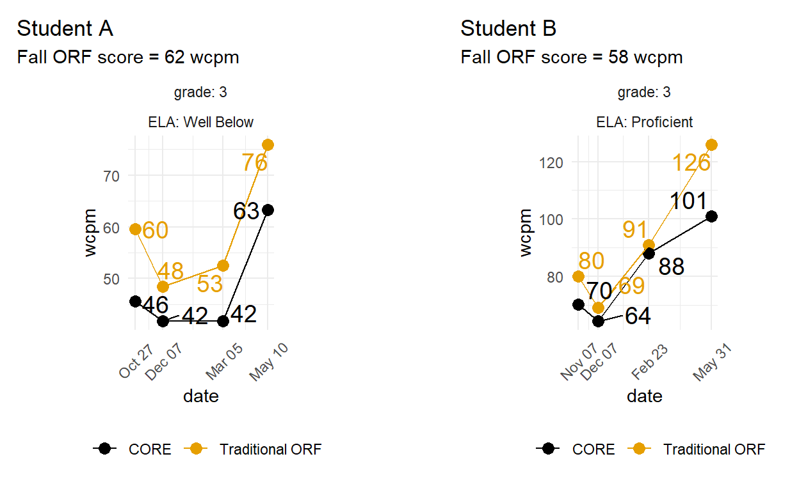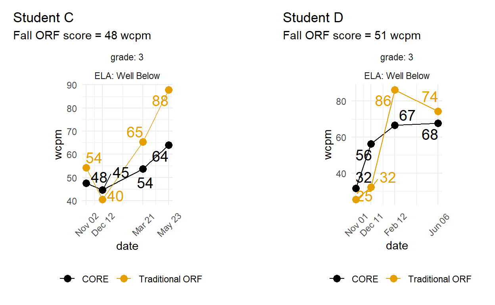
| Teacher | ORF | Response |
|---|---|---|
| Student A | ||
| Teacher 1 | 62 | A score of 62 WCPM would put this student is in a category of 'some risk'. This student is at approximately the 25%ile. |
| Teacher 2 | 62 | This student is reading at a rate that is below the third-grade level. Not much else can be detected from this number. |
| Teacher 3 | 62 | Below level, probably qualifying for reading interventions. |
| Student B | ||
| Teacher 1 | 58 | This student is would be considered high risk. |
| Teacher 2 | 58 | The student is reading below grade level. |
| Teacher 3 | 58 | Below level. |
| Student C | ||
| Teacher 1 | 48 | This student is at high risk scoring at approximately the 10th %ile. |
| Teacher 2 | 48 | Struggling reader in need of support. |
| Teacher 3 | 48 | Well below level. |
| Student D | ||
| Teacher 1 | 51 | High Risk |
| Teacher 2 | 51 | Struggling reader. |
| Teacher 3 | 51 | Well below level. |
Results: Based on all of the third grade ORF scores, all three teachers unanimously agreed that these students fell below 3rd grade reading level and would be considered at risk.
| Teacher | Student | Response |
|---|---|---|
| Teacher 1 | Student A | I would like to see a phonics/decoding screener to determine if the fluency rate is lower because of decoding issues. |
| Teacher 2 | Student A | Without hearing the passage being read, one can not determine where the child has difficulty. Nor is there any evidence of comprehension. Even a slow reader can indicate comprehension with intonations. |
| Teacher 2 | Student B | How often does the child pause and for how long. |
| Teacher 2 | Student D | I would want to listen to hear what needs to be addressed. Is it word attack, vocabulary, nerves, or basic sight-words. |
Results: Many teachers believe these students are at risk of poor reading outcomes. When asked to further explain, many teachers felt they didn’t have enough information. To make a conclusive decision about the student, teachers would need to either hear a recording of the student or watch the student read aloud. This would improve their knowledge of the student’s decoding skills, reading pace, and pausing habits.
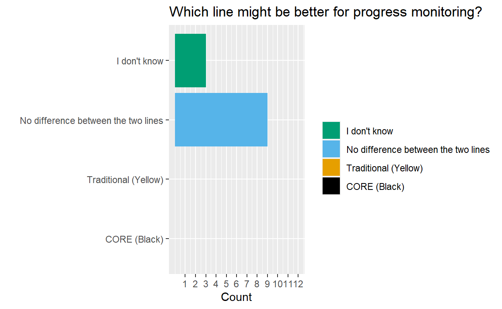
Results: For most of the plots, teachers agreed that there was little difference between the two lines. Common aspects pointed out included slow progress and similar direction.
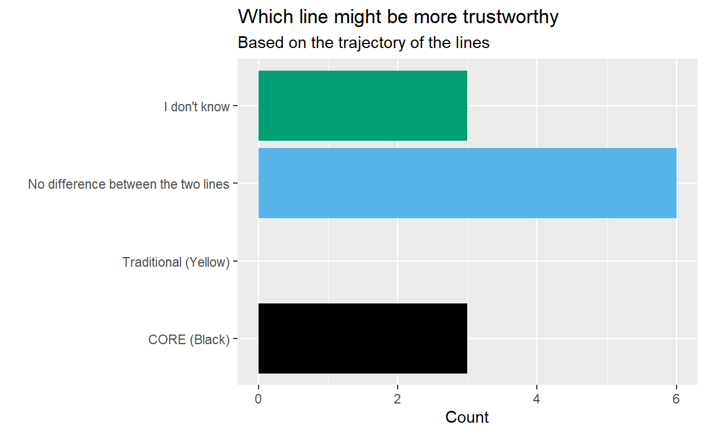
| Why? | ||
|---|---|---|
| CORE (Black) | ||
| Student A | Teacher 1 | The initial drop of the yellow line seems as though there could be other circumstances involved, such as the child not feeling well. |
| Student C | Teacher 1 | The sharp decline from November to December on the yellow line seems like an anomaly. |
| Student D | Teacher 1 | The huge discrepancy from the first two data point and the last two of the yellow line seems unreliable. There had to be some factor for the student testing so low in the fall. |
| I don't know | ||
| Student A | Teacher 2 | There is not enough information. |
| Student B | Teacher 2 | They only show data points. Not enough information. |
| Student D | Teacher 2 | Not enough information. |
| No difference between the two lines | ||
| Student A | Teacher 3 | The progress tracks the same between both. |
| Student B | Teacher 1 | Both students are in an upward trajectory making progress. |
| Student B | Teacher 3 | They are tracking similarly. |
| Student C | Teacher 2 | These are data points only. Without a student to listen to, there is not enough to go on. |
| Student C | Teacher 3 | Both show a similar trend in the students reading progress. |
| Student D | Teacher 3 | Both show similar trend of positive reading growth. |
Results: While most teachers noted the lack of difference between lines, a few stated that the CORE line appears to be more trustworthy. They pointed out that the sharp decline in the ORF (Yellow) line may be due to extenuating circumstances unknown to them.
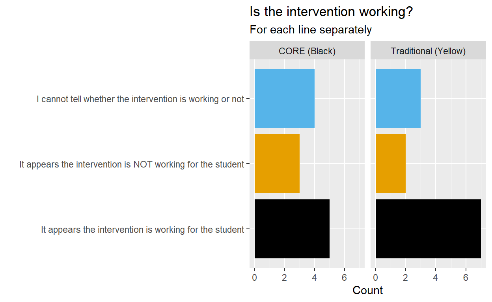
| Teacher | ||
|---|---|---|
| I cannot tell whether the intervention is working or not | ||
| Student A | Teacher 2 | Although there was an initial drop, and a slight rise after, without the next point it's not clear whether the child was helped by interventions. |
| Student B | Teacher 2 | The graph seems to show an increase in the student's reading rate only. Fluency is more complicated. Gains are made through class/whole group work as well, where we work on expression and the author's intent. I teach children to read punctuation, as it is the directions from the author on how to read a passage. |
| Student C | Teacher 2 | The upward trajectory looks good. However, I would need to listen to the child. |
| It appears the intervention is NOT working for the student | ||
| Student A | Teacher 1 | There is little to no gain in fluency. |
| Student A | Teacher 3 | The student's reading scores are tracking down. |
| It appears the intervention is working for the student | ||
| Student B | Teacher 1 | The student is making fluency gains. |
| Student B | Teacher 3 | The third data point shows great improvement. |
| Student C | Teacher 1 | Although the student shows a decline in the first month, there is an upward trajectory from Dec. - March. |
| Student C | Teacher 3 | The third data point shows strong positive reading growth. |
| Student D | Teacher 1 | There was a huge gain. |
| Student D | Teacher 2 | The trajectory is upward. |
| Student D | Teacher 3 | Student may huge reading growth gains by the third data point. |
| Teacher | ||
|---|---|---|
| I cannot tell whether the intervention is working or not | ||
| Student A | Teacher 2 | Listening is how we can tell how the student is reading. The numbers alone don't indicate where the difficulties lie. One thing that students are coached on is punctuation and how to read what the author intended. Intonation is not measured, and that is an indication of fluency supporting comprehension as it should be measured for CCSS. |
| Student B | Teacher 1 | The student is making gains, but not at the rate I would like to see. |
| Student B | Teacher 2 | The graph seems to show an increase in the student's reading rate only. Fluency is more complicated. Gains are made through class/whole group work as well, where we work on expression and the author's intent. I teach children to read punctuation, as it is the directions from the author on how to read a passage. |
| Student C | Teacher 2 | I need to listen to the child. That is how I diagnose. |
| It appears the intervention is NOT working for the student | ||
| Student A | Teacher 1 | There is little to no gain in fluency. |
| Student A | Teacher 3 | The scores are tracking down. |
| Student C | Teacher 1 | Little to no progress is being made. |
| It appears the intervention is working for the student | ||
| Student B | Teacher 3 | The third data point shows great improvement. |
| Student C | Teacher 3 | The third data point shows positive reading growth. |
| Student D | Teacher 1 | Steady increase |
| Student D | Teacher 2 | Improvement is evident in increase, but more information is needed. |
| Student D | Teacher 3 | Student may huge reading growth gains by the third data point. |
Results: Teachers across the board agreed that the intervention is working for student D based on the data displayed. Teachers believed that the intervention was either not working or they were unable to interpret the data for student A. Students B and C were also difficult for teachers to interpret, but overall they displayed an understanding that the intervention was working. If teachers were unable to tell whether the intervention was working or not, they stated the need to listen to the student in order to diagnose their progress.
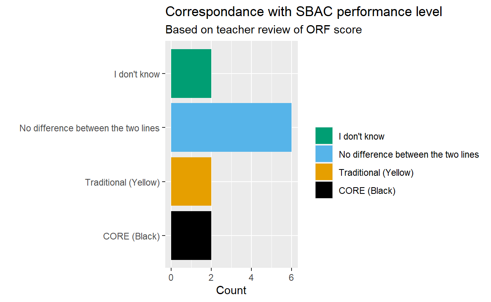
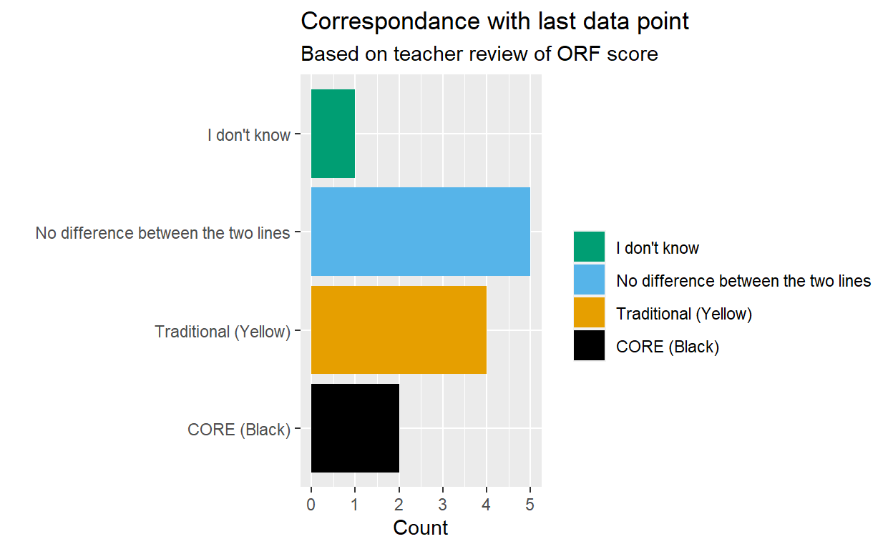
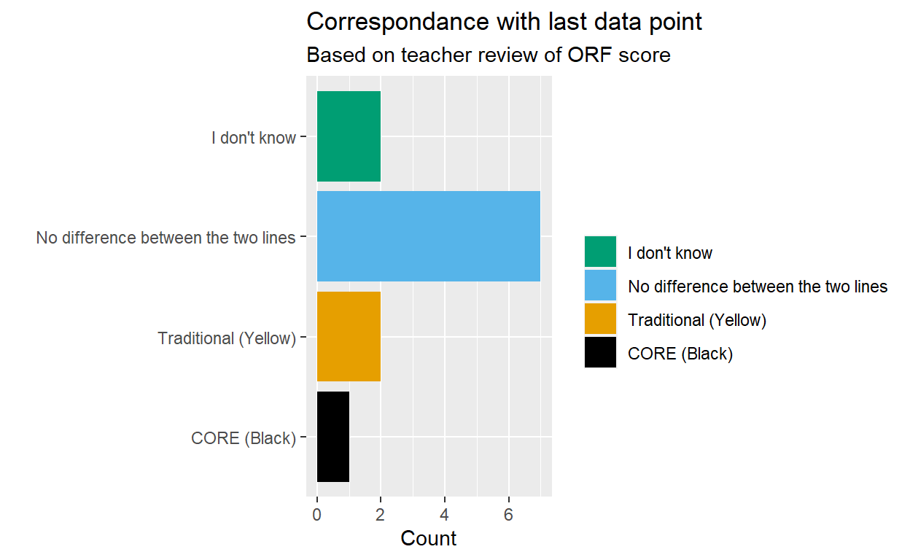
Results: Neither line corresponded better with the SBAC performance level. For both the first and last data points, many teachers noted the lack of difference between lines displayed. Those that did observe a difference found the ORF (Yellow) line to correspond more effectively in both circumstances.
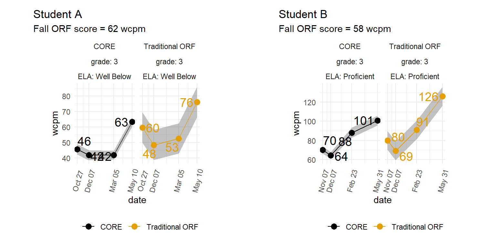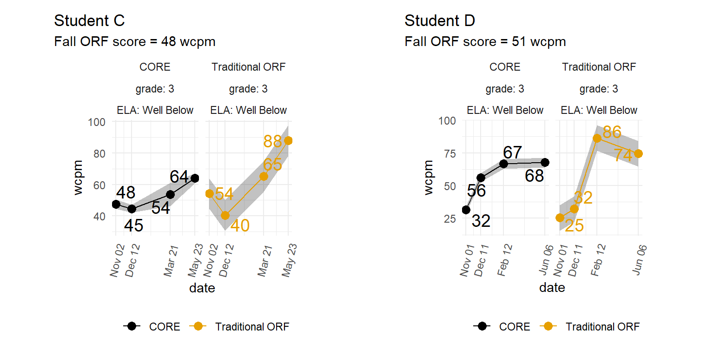
| CORE (Black) | ||
| Student B | Teacher 1 | This student's progress is slower. |
| Student D | Teacher 1 | It shows a minimal |
| Student A | Teacher 3 | It appears to be a closer measurement of the student's reading capability - less chance of error. |
| I don't know | ||
| Student B | Teacher 2 | I didn't hear the student read these passages. |
| Student C | Teacher 2 | Not enough information. |
| Student D | Teacher 2 | We need more than numbers alone to make decisions. |
| No difference between the two lines | ||
| Student A | Teacher 1 | Both students are well below grade level which means progress monitoring would guide decision making for both students. |
| Student C | Teacher 1 | Both students need intervention and progress monitoring is one measure for data-based decision making. |
| Student A | Teacher 2 | Both show a range, which are only possibilities. Listening is more important for diagnosing needs. |
| Student B | Teacher 3 | They both are showing similar positive growth trend. The yellow line does show more like a student at the proficient level though. |
| Student C | Teacher 3 | They show similar trends. |
| Student D | Teacher 3 | Both show similar trends and the student is at about the same level at year-end with both. |
Results: A majority of teachers noted the lack of difference between lines and the same trend observed in both data sets.
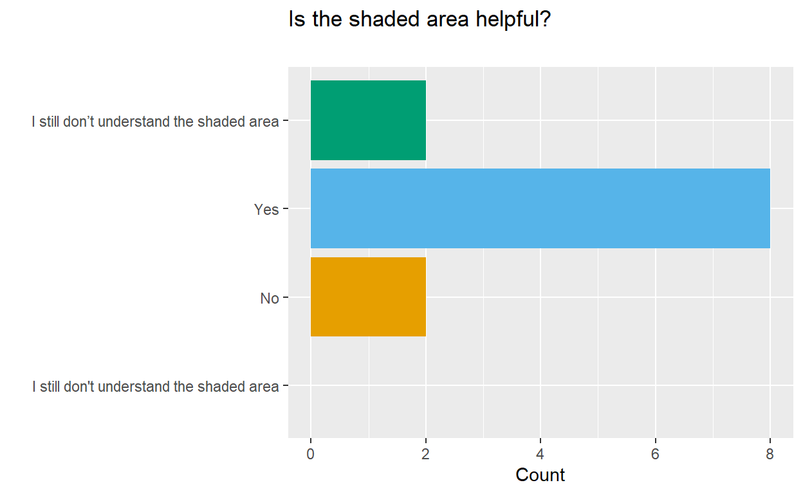
| Response | |
|---|---|
| Student A | |
| Teacher 1 | The student with a greater measurement error may need different accommodations when testing. |
| Teacher 2 | I wouldn't, I would listen to the student reading a passage. |
| Teacher 3 | The results from both lines fall within their counterparts shaded areas, increasing my confidence of how the student's reading is truly doing. |
| Student B | |
| Teacher 1 | Even though the yellow graph shows a greater measurement error, this student is making adequate progress. The student with the black graph definitely benefits from progress monitoring. |
| Teacher 2 | It would allow me to identify the student I would want to read with first and see where I need to target our learning. But these numbers are only numbers. There is never enough information. |
| Teacher 3 | The student may be only borderline proficient and based on the gray area might want to be assigned to a slightly lower level reading group if groups are being used. |
| Student C | |
| Teacher 1 | The yellow student may need other accommodations when testing. |
| Teacher 2 | I would use it to indicate that I need to check in with the student to listen, coach, and encourage. |
| Teacher 3 | Shows the range of where the student might really be at. |
| Student D | |
| Teacher 1 | The black line shows a minimal measurement error. |
| Teacher 2 | Let it guide me to take a closer look at a student's performance. |
| Teacher 3 | It shows where the reading range might be for the student. |
Results: A majority of teachers stated that the shaded area was helpful when observing the data. Common applications of the measurement error included early identification, understanding the range a student falls within, and as a guide for implementing assistance in the future.
The below figures are representative of 4th grade student scores. Please refer back to these figures when observing the data collected from teacher surveys.
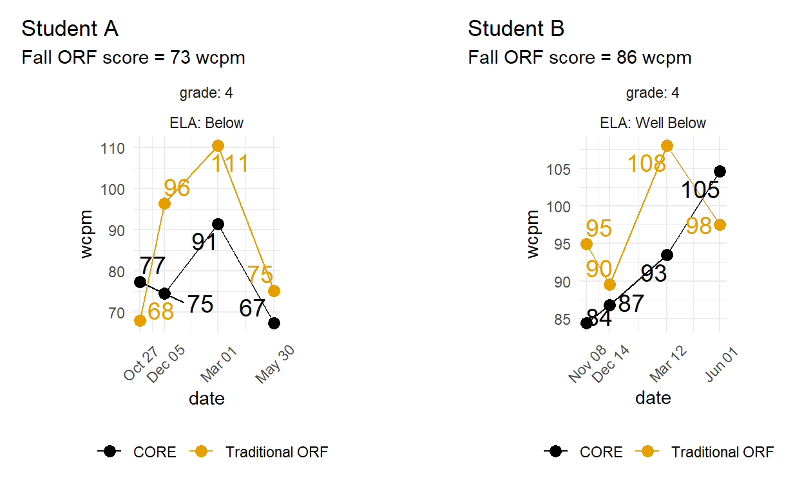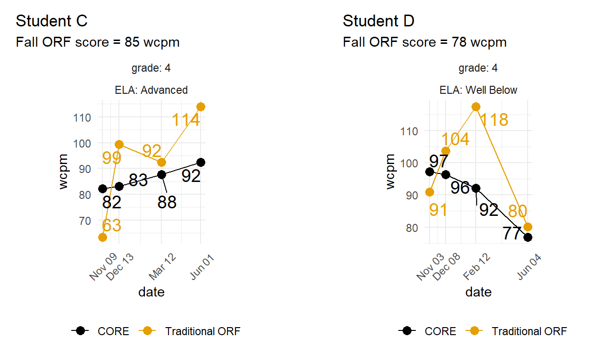
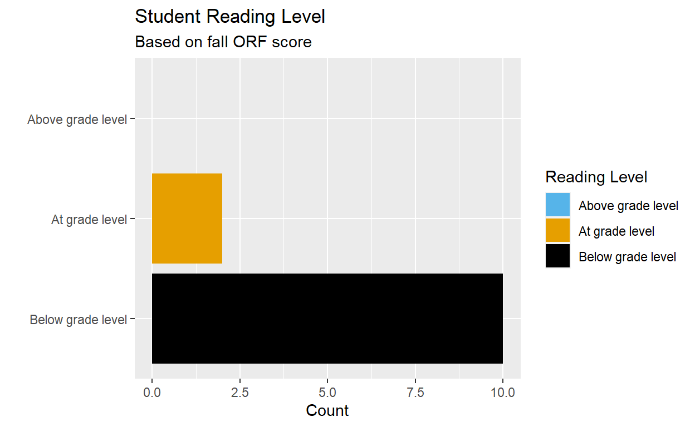
| Teacher | ORF | Response |
|---|---|---|
| Student A | ||
| Teacher 1 | 73 | The student is reading significantly below grade level. We expect some summer regression, but 73 wpm would lead me to believe that the students may have some gaps in phonics and decoding. |
| Teacher 2 | 73 | This ORF score would indicate that the student is likely reading below grade level. |
| Teacher 3 | 73 | A oral reading fluency score of 73 tells me that this students may be a slower reader. They may be taking time to sound out words, or maybe not recognizing sight words as quickly as they should. With a fluency rate of 73 this student will need additional time to read grade level content material. |
| Student B | ||
| Teacher 1 | 86 | Below level |
| Teacher 2 | 86 | This student is at risk based on this score. |
| Teacher 3 | 86 | This student has emerging reading skills. Although their reading fluency score is lower than I would hope it to be, I could infer that this student is just a slower reader. I really like to see comprehension data along with the fluency scores because I like to know if the student is perhaps reading a bit slower because they're are focused on comprehending what they read. I would also like to see the students accuracy scores. It is a big difference if the student has a low score with 100% accuracy versus a student with a low score due to several errors. |
| Student C | ||
| Teacher 1 | 85 | Below level. |
| Teacher 2 | 85 | This student is at risk. |
| Teacher 3 | 85 | Please see previous response for additional information needed. |
| Student D | ||
| Teacher 1 | 78 | Below level. |
| Teacher 2 | 78 | This student is at risk. |
| Teacher 3 | 78 | The student seems to be reading at a lower level. I would need to see comprehension scores along with accuracy. |
Results: Based on these ORF scores, many teachers believe that this student is reading significantly below the 4th grade reading level. On a few occasions, one teacher argued that this may just be a slower reader, not a student reading below grade level; comprehension data and fluency scores would help to assist the teacher in determining if the student is below grade level.
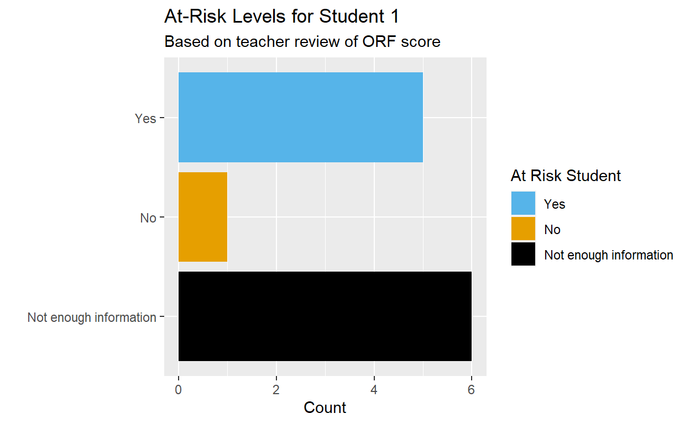
| Teacher | Student | Response |
|---|---|---|
| Teacher 1 | Student A | Was the student uncomfortable, testing with an unfamiliar adult, new school? I would want more formative assessments to see if this one assessment was a true indicator of performance. |
| Teacher 3 | Student A | Comprehension scores |
| Teacher 1 | Student B | Would need to know whether student is receiving intervention, on an IEP, attendance, etc. |
| Teacher 3 | Student B | See above |
| Teacher 1 | Student C | Attendance, previous interventions, IEP?, is the student new to the school |
| Teacher 1 | Student D | Attendance, previous interventions, IEP? |
Results: Many teachers agreed that this student is at risk of poor reading outcomes; however, the majority needed more information to make this conclusion. Many asked for more formative assessment, comprehension scores, attendance records, and an IEP if the student has one.
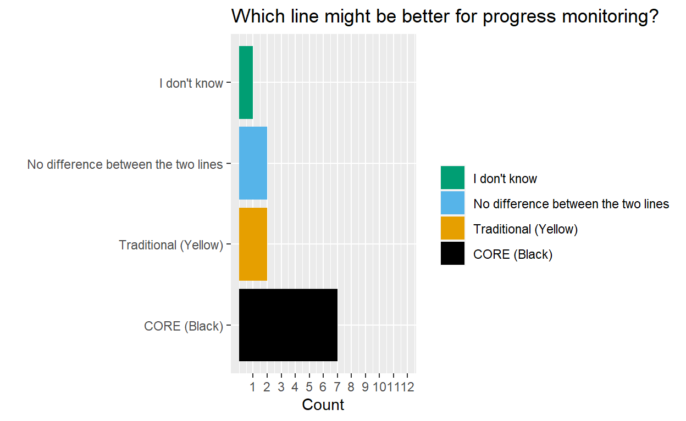
| CORE (Black) | ||
|---|---|---|
| Teacher | Student | |
| Teacher 1 | Student A | Both lines show outliers in the passages students were reading. You can see that the two students both had dips on the same passages. The black line is more accurate for creating a student aim line. |
| Teacher 1 | Student B | Students trend line is more consistent. They are making continuous growth. |
| Teacher 2 | Student B | It shows a steady increase in scores. |
| Teacher 3 | Student A | This line shows more of a steady progression. |
| Teacher 3 | Student B | Shows a steady line. |
| Teacher 3 | Student C | NA |
| Teacher 3 | Student D | NA |
| Traditional (Yellow) | ||
|---|---|---|
| Teacher | Student | |
| Teacher 2 | Student A | While both lines have some wide swings in performance, the yellow line seems to indicate overall progress and effective interventions. |
| Teacher 2 | Student D | It shows growth. |
| No difference between the two lines | ||
|---|---|---|
| Teacher | Student | |
| Teacher 1 | Student C | The first score for the yellow student is clearly an outlier and should be included when looking at their aim line. The other progress monitoring points are fairly consistent with growth. The black line student line is consistent but shows minimal growth over the course of a school year. |
| Teacher 1 | Student D | Both lines show consistent trends. The yellow is a positive trend with a student following an upward aim line and the black a downward aim line. The June progress monitoring data point is clearly an outlier and should be excluded. The passage may have been more complex or included information that student didn't understand. |
| I don't know | ||
|---|---|---|
| Teacher | Student | |
| Teacher 2 | Student C | steady, consistent scores, without wide fluctuations. |
Results: Most teachers agreed that the black (CORE) line was better for progress monitoring as it displayed steady growth. A few noted that both lines showed consistent trends and that some data points could be considered outliers overall.
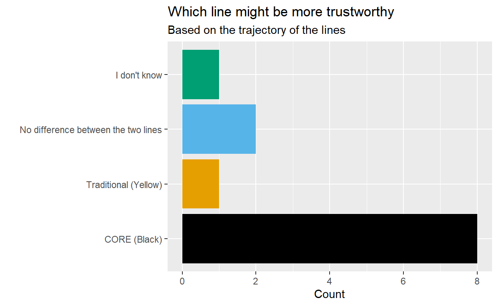
| Why? | ||
|---|---|---|
| CORE (Black) | ||
| Student A | Teacher 1 | While the yellow student shows more growth, the black line is more consistent therefore more trustworthy. |
| Student A | Teacher 3 | The black line shows more consistency. |
| Student B | Teacher 1 | The line follows a common trend. |
| Student B | Teacher 2 | The increases are steady. |
| Student B | Teacher 3 | Consistent |
| Student C | Teacher 2 | Steady growth without wide performance swings. |
| Student C | Teacher 3 | NA |
| Student D | Teacher 3 | NA |
| I don't know | ||
| Student D | Teacher 2 | It depends on the interventions given, and other factors in the student's life. |
| No difference between the two lines | ||
| Student C | Teacher 1 | See notes above. |
| Student D | Teacher 1 | See above. |
| Traditional (Yellow) | ||
| Student A | Teacher 2 | The Yellow line indicates that although the May score fell from the March score significantly, there was progress made through the course of the year. |
Results: A majority of teachers agreed that the black (CORE) line was more trustworthy. One teacher noted that even though the yellow line technically shows more growth, the black line is much more consistent with its data making it more reliable.
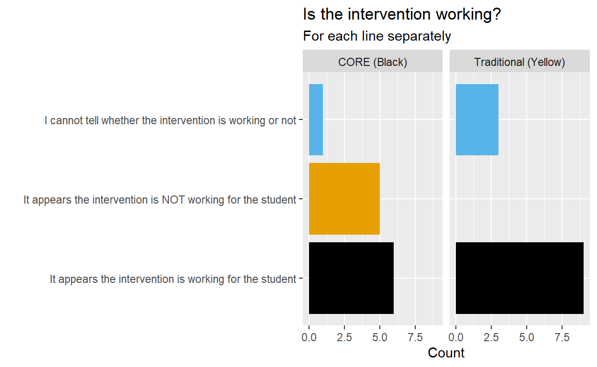
| Teacher | ||
|---|---|---|
| I cannot tell whether the intervention is working or not | ||
| Student B | Teacher 1 | Student's progress monitoring scores are all over the map. |
| Student B | Teacher 2 | There are wide swings in the data points. |
| Student C | Teacher 2 | There appears to be growth at first, but it is not maintained. |
| It appears the intervention is working for the student | ||
| Student A | Teacher 1 | Student has made significant growth. This would be a very successful intervention. |
| Student A | Teacher 2 | Higher word count per minute each assessment. |
| Student A | Teacher 3 | The line is showing a significant improvement in the reading skill the intervention is addressing. |
| Student B | Teacher 3 | A drop in the beginning of the program but then a steady incline once the program is established. |
| Student C | Teacher 1 | Student is making adequate growth for the year with the exception of one outlier progress monitoring point. |
| Student C | Teacher 3 | NA |
| Student D | Teacher 1 | Student is making significant adequate progress towards end of the year growth, despite the data point from June. |
| Student D | Teacher 2 | The student shows growth in performance. |
| Student D | Teacher 3 | NA |
| Teacher | ||
|---|---|---|
| I cannot tell whether the intervention is working or not | ||
| Student A | Teacher 1 | I would need more than three data points to tell whether the intervention is working. The student could have just had an off day in December or the passage could have been significantly easier in March. |
| It appears the intervention is NOT working for the student | ||
| Student C | Teacher 1 | While the student's score is consistent and making slow progress the intervention isn't making the 2.5 word growth goal per week. The student should be making more progress more quickly. |
| Student C | Teacher 3 | The line is not showing a significant improvement in the reading skill. With an intervention program you should see the trajectory of the line increasing faster. |
| Student D | Teacher 1 | Student is not making adequate growth and another intervention should be considered. |
| Student D | Teacher 2 | Performance on assessments is decreasing. |
| Student D | Teacher 3 | NA |
| It appears the intervention is working for the student | ||
| Student A | Teacher 2 | The March score shows a significant improvement from the October score. |
| Student A | Teacher 3 | The first point is the initial score. The second point looks to me like the intervention is just beginning and the third point shows the increase in skill once the student has been participating in the intervention over time. |
| Student B | Teacher 1 | Continuous upward trend. |
| Student B | Teacher 2 | There seems to be steady progress. |
| Student B | Teacher 3 | The student is making steady progress |
| Student C | Teacher 2 | Steady growth without wide swings in performance |
Results: The results are largely similar across the two measures, with the exception that for the CORE data, 5 teachers reported that the intervention was NOT working, but 0 teachers reported the same for the Traditional data. According to the teacher feedback, it may be that the CORE data better displays student progress, or growth.
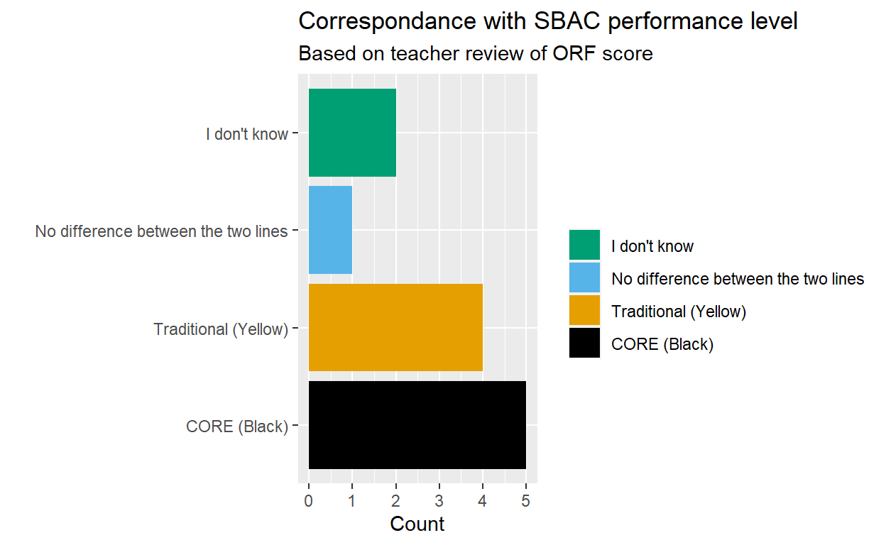
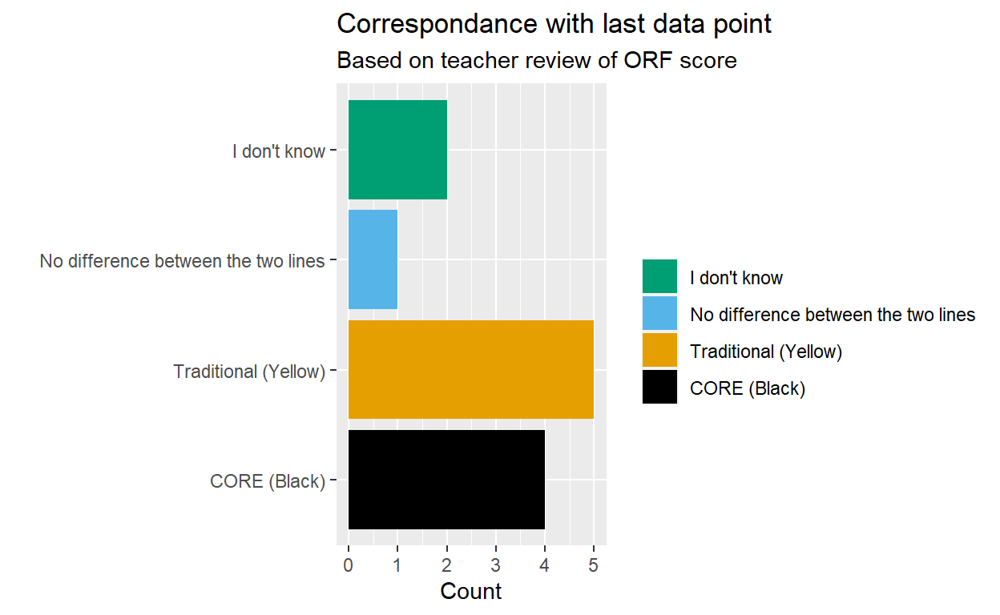
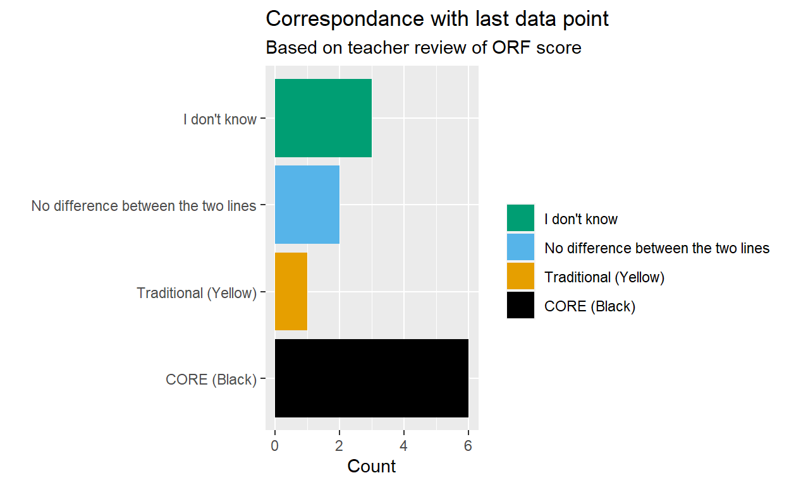
Results: Although it was close, more teachers agreed that the black (CORE) line corresponds better with the SBAC performance level. Based on the first data point from October or November only, most teachers agreed that the black (CORE) line is a better match for the student’s expected SBAC performance level. However, when looking only at the last data point from May or June only, more teachers agreed that the yellow line was a better comparison.
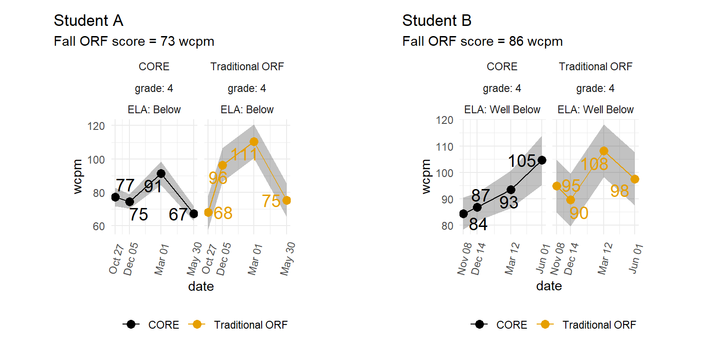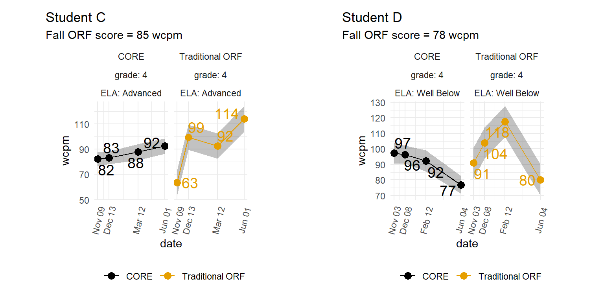
| CORE (Black) | ||
| Student A | Teacher 1 | Smaller room for error based on the grey measurement error. |
| Student B | Teacher 1 | Smaller error measurement, more consistent trend. |
| Student C | Teacher 1 | Consistency and aim line. |
| Student A | Teacher 2 | It has less measurement error. |
| Student B | Teacher 2 | There appears to be less measurement error. |
| Student C | Teacher 2 | Less gray area |
| Student D | Teacher 2 | Less gray |
| Student A | Teacher 3 | The yellow line is too extreme. |
| Student B | Teacher 3 | NA |
| I don't know | ||
| Student D | Teacher 3 | NA |
| No difference between the two lines | ||
| Student D | Teacher 1 | Both lines are showing consistent trends if you remove the data point from June. The Yellow line student is trending upwards and you can create their aim line based off those 3 data points. The Black line student has a consistent trend as well, although it's trending downward. |
| Traditional (Yellow) | ||
| Student C | Teacher 3 | The drastic change of the line shows me where the student is struggling. |
Results: Teachers almost unanimously agreed that the black (CORE) line was better for progress monitoring and data-based decisions. Many noted that it appeared to have a smaller measurement error and more consistent trend.
| Response | |
|---|---|
| Student A | |
| Teacher 1 | It could help determine students outlier scores and make with the reliability of progress monitoring. |
| Teacher 2 | I might use it to adjust my interventions, or to check the integrity of my assessments. |
| Teacher 3 | Based off of this data I could determine if the student needed an intervention program focused on oral reading fluency skills. |
| Student B | |
| Teacher 1 | This could be used to tell whether an intervention is working for a student. If the intervention is successful the error measurement would be smaller. Would help eliminate the outside factors when progress monitoring a student. |
| Teacher 2 | I can use it to determine the nature of interventions and the consistency of assessments. |
| Teacher 3 | NA |
| Student C | |
| Teacher 1 | NA |
| Teacher 2 | To evaluate the effectiveness of my interventions. |
| Teacher 3 | NA |
| Student D | |
| Teacher 1 | NA |
| Teacher 2 | Consider other interventions |
| Teacher 3 | NA |
Results: Teachers unanimously agreed that the shaded area was helpful to consider when making data-based decisions. Many noted that it increased the reliability of the data overall and allowed them to evaluate whether their interventions were effective or not.